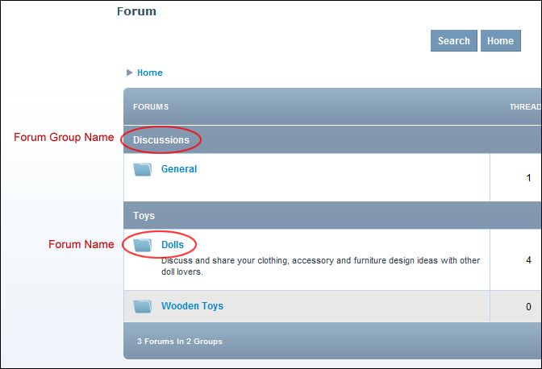
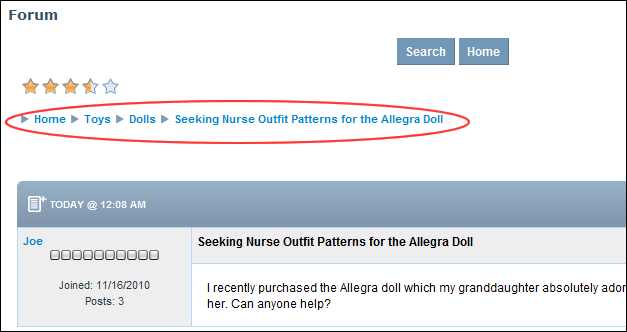

Navigating to Forums & Forum Groups
How to navigate to forum groups, forums, threads and posts from the Home page of the Forum module.
Go to a Forum Group
- Click on the [Forum Group Name] link.
Go to a Forum
- Click on the [Forum Name] link.
- Optional. Click the Show No Replies or Show With Replies link (located under the Search box in the top right-hand corner of the module) to modify the threads are displayed.
- Optional. Change the order of threads from Oldest To Newest or Newest To Oldest by selecting either option from the drop down list located in the bottom right corner of the page.

Navigating Forums
Navigating Using Breadcrumbs
Breadcrumbing of forum names enables you to quickly view other forums without returning to the Forum Home.

Breadcrumbs enable users to quickly navigate Forums